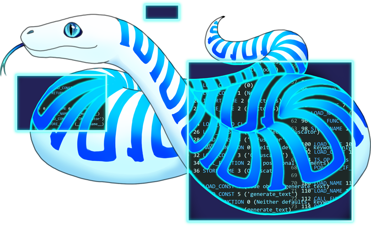

PyLingual
A Python decompiler for Python 3.6+. Useful if you have .pyc files that you
want to reverse engineer. If you can't run it locally, use the web version.
- 🐍 Python decompilation
- 🌎 Open source software
- 🕸️ On the web